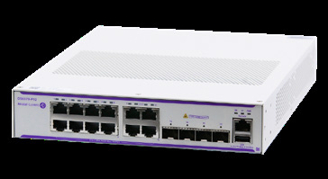

bp-os6370-datasheet

R（触发场景）
- Wi-Fi 7 高密楼层接入：多口 2.5G + 95W bt 供电选型（P12Z12/P24Z8/P48Z16）
- PTZ 摄像头、自助终端、超高清数字标牌等高功率 IoT 供电规划
- OS6370-SW-PERF4/PERF2（10G 上联）与 SW-AR（动态路由）许可行项核对
- Zero Trust/Secure Boot 安全应答；OT/IOT 装维配套（Smart Tool）
I（核心理念）
OS6370 定位"为下一代数字企业与收敛接入填平价值接入与高性能多千兆交换之间的鸿沟"（ <span class="pg">原文p24</span> ："bridge the gap between value-access and high-performance multi-gigabit switching"）：GbE + 多千兆混合、95W PoE、进阶 L3 许可制。层级：企业接入层多千兆档，下接 6360（价值接入）、上接 6560（校园多千兆 + 6x10G 上联）。
A1（与相邻系列选型差异）
- vs OS6360：6360 只有 P48X/PH48 的 2 口 2.5G/95W；6370-Z 型每台 8~16 口 2.5G（60W）+ 2 口 95W（
<span class="pg">原文p24</span>）。Wi-Fi 7 AP 全上 2.5G 的楼层选 6370-Z，过渡期少量多千兆选 6360（C2）。 - vs OS6560：6560 有 6x10G 上联 + 20G 堆叠 + 全口 MACsec + JTIC； 6370 上联 2~4 口 SFP+（10G 需许可）、10G VC、无 MACsec，但多千兆口密度更高、有 Smart Tool OT 工具。
- 安全差异：6370 "Secure by Default"/Zero Trust + Secure Boot（
<span class="pg">原文p25</span>），NDcPP "Designed for certification*"（未来版本，X18）；6360/6560 已 NDcPP EAL1 认证。
A2（规格细节速查表）
机型矩阵（ <span class="pg">原文p26</span> ）：
PoE 千兆型：P12（12x30W，145W 预算，Fan-less）/P24（24x30W，190W）/P48（48x30W，360W）/PH24（24x30W，360W）/PH48（48x30W，760W）/P24X（24x30W，360W）/P48X（48x30W，760W）。
多千兆 Z 型：
| 型号 | 1G 口 | 1G/2.5G 口 | PoE 分布 | 预算 | 上联 SFP+ 1G/10G |
|---|---|---|---|---|---|
| OS6370-P12Z12 | 0 | 12 | 10x60W + 2x95W | 360W | 4 |
| OS6370-P24Z8 | 16 | 8 | 16x30W + 6x60W + 2x95W | 360W | 4 |
| OS6370-P48Z16 | 32 | 16 | 32x30W + 14x60W + 2x95W | 760W | 4 |
非 PoE 型：12/24/48/24X/48X；全光型 U24X（24x100/1000M SFP + 4x SFP+）。
上联与堆叠：SFP+ 上联默认 1G，SW-PERF 许可后 10G（ <span class="pg">原文p26</span> 注）；VC 8 台 + ISSU（ <span class="pg">原文p24</span> ）；2x10GE VFL 容量 40 Gb/s（ <span class="pg">原文p27</span> ）。
交换容量与包转发：千兆型 68~216 Gb/s（50~160 Mpps， <span class="pg">原文p27</span> / <span class="pg">原文p28</span> ）；Z 型 140/152/224 Gb/s（104/152/166 Mpps， <span class="pg">原文p29</span> ）。
电源体系：单一内置电源、Backup N/A（ <span class="pg">原文p27</span> ）；PoE 满载最高 952.38W（P48X/PH48， <span class="pg">原文p28</span> ）；Perpetual/Fast PoE 全 PoE 型号（ <span class="pg">原文p24</span> ）。
Layer 特性：静态路由 IPv4/IPv6 默认（256 IPv4 + 32 IPv6 静态路由、128 IPv4 + 32 IPv6 接口、2K IPv4 LPM， <span class="pg">原文p33</span> ）；OSPFv2/v3、PIM-DM/SM、RIPv2、RIPng、BFD 需 OS6370-SW-AR 许可（ <span class="pg">原文p30</span> ，且 12/P12 型不适用）；ITU-T G.8032 ERPS 环保护（ <span class="pg">原文p32</span> ）；32k MAC、4k VLAN、9216B 巨帧、<4µs；无 SPB/VXLAN/MPLS/MACsec。
许可家族（ <span class="pg">原文p26</span> / <span class="pg">原文p30</span> ）：SW-PERF4（4 口 SFP+ 升 10G，适用 PH48）；SW-PERF2（2 口升 10G，适用 12/P12/PH24/PH48/P48X/48X）；SW-AR（动态路由，除 12/P12）。
硬件平台：1GHz MIPS（12 口 800MHz）、1GB DDR4、512MB NAND、2MB 包缓冲（ <span class="pg">原文p27</span> / <span class="pg">原文p28</span> ）。
功耗/环境：待机 7.91~37.55W；0~45°C；MTBF 367k~1872k 小时（ <span class="pg">原文p27</span> / <span class="pg">原文p29</span> ）。
规格红线：Backup N/A；95W 口每台仅 2 个；NDcPP 未完成认证。
E（适用场景）
- Wi-Fi 7 高密楼层：P48Z16（32x30W + 14x60W + 2x95W，760W），AP 全 2.5G 上联（C2）
- 企业分支 + SMB 的 IoT 收敛接入（
<span class="pg">原文p24</span>），mDNS relay 跨网段服务发现（<span class="pg">原文p25</span>） - OT/IoT 现场装维：OmniVista Smart Tool 快速定位线缆/PoE 问题（
<span class="pg">原文p24</span>） - 分期建设：先 1G 上联跑，PERF4/PERF2 许可后升 10G；后续需要 OSPF/BGP 再加 SW-AR（C9）
B（限制与坑）
- NDcPP 认证"Designed for...* Supported in future release"（
<span class="pg">原文p25</span>注）——写标书不能声称已认证（X18） - SW-PERF 许可适用型号有限：PERF4 仅 PH48，PERF2 不含 P24X/U24X 等（
<span class="pg">原文p30</span>型号清单）；12/P12 型不能上 SW-AR 路由许可 - 10G 上联默认关闭，到货即插不通——许可行项勿漏（X15）
- Backup power 全系 N/A（
<span class="pg">原文p27</span>） - 95W 口每台 2 个——AP1570 级设备要映射到指定口（对照 C11）
- 48 口 PoE 型风扇 3 个、满载噪音 ~41 dB(A)——静音环境注意（
<span class="pg">原文p28</span>Acoustics 40.9）
来源：bp-omniswitch-datasheets DOC 4（p24-35，DID26030201EN August 2026）；verified.md C2/C9/C11/X15/X18/P6/P7/F1/F3